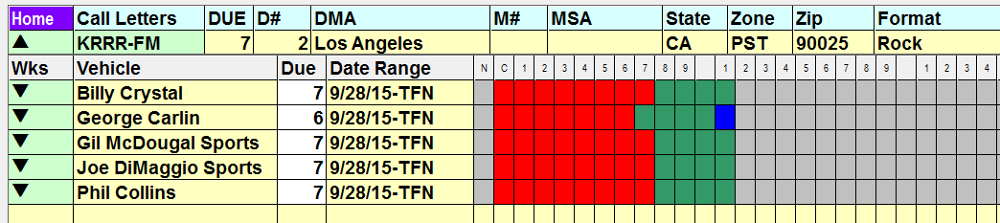
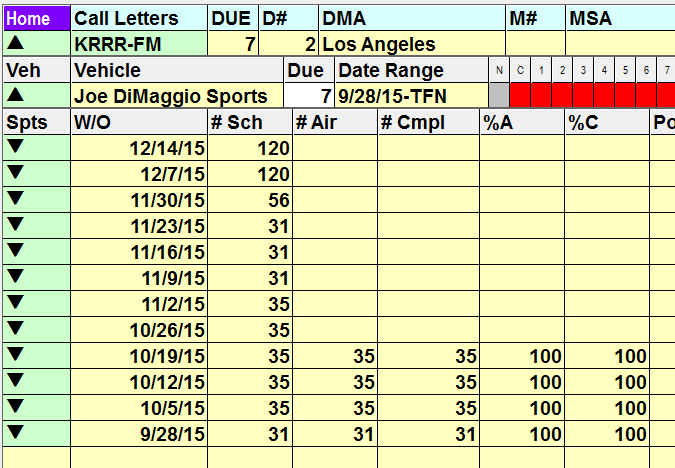
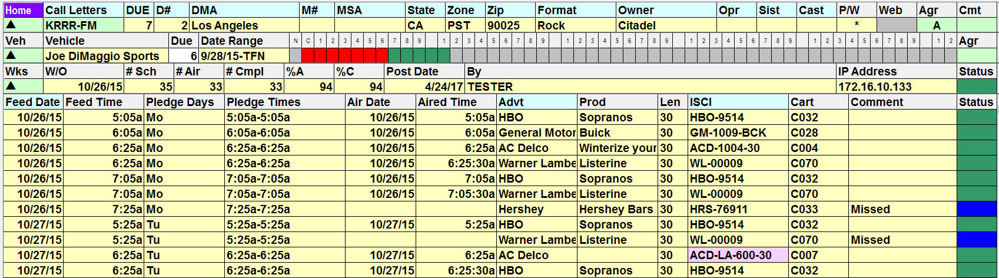
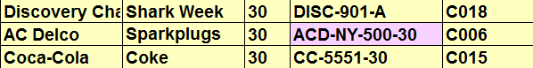

Viewing the Status Information
From the main Affiliate Management screen that shows the list of stations based on the chosen filter (or all stations if no filter is selected), you can expand the view to see more detailed information about each station and the status of past weeks.
Station Overview
Click once on the triangle to the left of the call letters to expand the list to show the vehicles affiliated with that station.
Each affiliated vehicle will be listed, followed by the date range of the agreement, and a one year grid that shows the status of the affidavit for each week, starting with the next week (N), then the current week (C), and working backwards in this way for an entire year.
The status of the affiliate affidavit is shown using the following colors:
- Brown: Not yet exported.
- Dark green: Aired and compliant (the number of spots aired equals the number of station compliant spots).
- Blue: Did not air.
- Light blue: Not compliant (the affidavit has been posted, but the number of spots aired does not equal the number of station compliant spots).
- Magenta: partially posted.
- Red: Not yet posted.

Mouse click the Key icon to see an explanation of the different colors. You can also hold the mouse over a week on the grid to see mouseover text that lists both the week date and the status (not yet posted, aired and compliant, etc.).
Note: these colors are used throughout this screen to indicate the affidavit status.
Clicking the up arrow next to the call letters will go back up one level to the view that shows the individual stations.
Viewing Individual Weeks
From the Station level view, clicking a down triangle next to a vehicle name will expand the view to show the airing information for each individual week for the selected station and vehicle.
The following fields are displayed:
- W/O: week of dates.
- # Sch: the number of spots scheduled to air.
- # Air: the number of spots aired (from CpttNoSpotsAired).
- # Cmpl: the number of station compliant spots (from CpttNoCompliant). Note: if the number of scheduled to air spots doesn’t equal the number of station compliant spots, then the affidavit status will be considered non-compliant.
- %A: the percentage of total spots that aired.
- %C: the percentage of total spots that are station compliant.
- Post Date: the date the affidavit was posted.
- By: the person who posted the affidavit.
- IP Address: the IP address of the person who posted the affidavit.
- Status: the color coded status is also shown.

Clicking the up arrow in the “Veh” field will close the week and go back up one level to the vehicle view.
Viewing Individual Spots
When viewing the individual weeks for a vehicle and station, you can click the down arrow next to a week to expand that week so that the individual airing spots are shown.
This view shows the following:
- Date: the feed date.
- Fed: the fed time.
- Pledge days: the day the spot was pledged to air.
- Pledge times: the time range the spot was pledged to air in.
- Air date: the date the spot actually aired.
- Air time: the time the spot actually aired.
- Advt: the advertiser name.
- Prod: the advertiser product.
- Len: the length of the spot.
- ISCI: the ISCI code of the spot.
- Cart: the cart number.
- Comment: used to indicate missed spots. The mouseover text shows the missed reason.
- Status: the color coded status is also shown.

The ISCI field will be highlighted with a light magenta color to indicate regional copy, as shown below.

Clicking the up arrow in the “Wks” field will close the week and go back up one level to the view that shows the individual weeks.